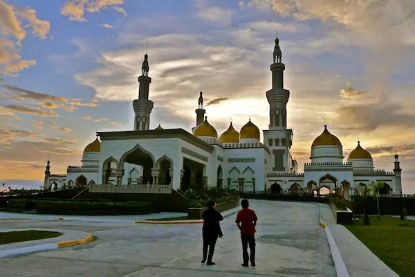
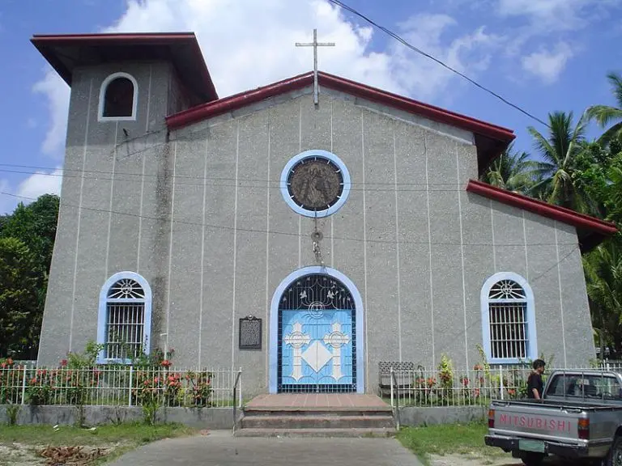
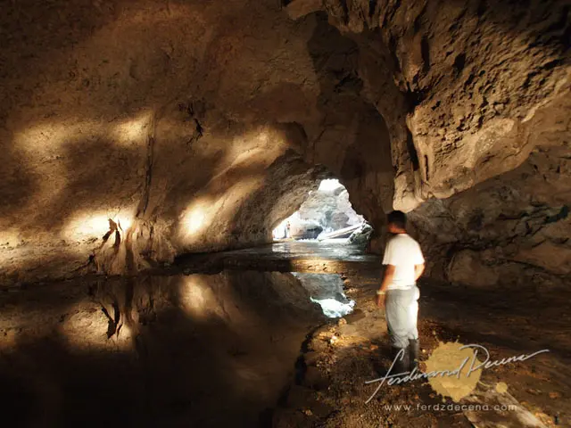
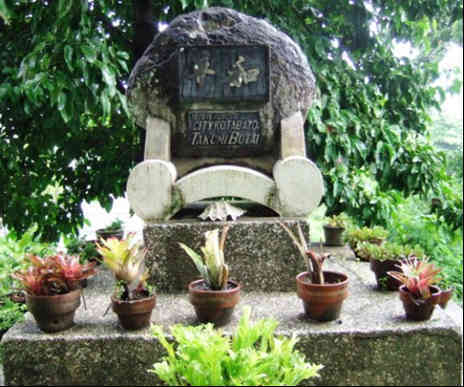
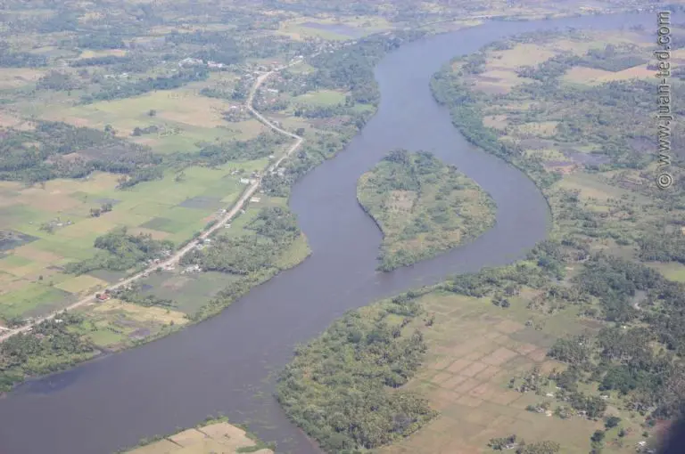

Province of Cotabato, is a landlocked province in the Philippines located in the Soccsksargen region in Mindanao. Its capital is the city of Kidapawan. Some of its barangays are under the jurisdiction of the nearby Bangsamoro Autonomous Region
Profile of Cotabato Province (Geography)
Location –> Southern Mindanao (SoCCSKSarGen) Region, Philippines (See map below)
Neighboring Provinces –> Bukidnon, Davao Del Sur, Sultan Kudarat, Maguindanao, and Lanao Del Sur
Capital –> Kidapawan City
Area –> 9,008.90 km2 (3,478.36 sq mi)
Population –> 1,379,747 (2015 census)
Terrain –> Mountainous on the northern side and lowland on the southern side
Industries –> Agriculture, Manufacturing
Major Products –> Rice, Corn, Sugarcane, Banana, Rubber, Durian, Coconut
People/Language –> Bisaya (Cebuano), Maguindanao, Manobo, T’boli, Ilianen, Ilocano City –> Kidapawan City
Municipalities (Towns) –> (17) Alamada, Aleosan, Antipas, Arakan, Banisilan, Carmen, Kabacan, Libungan, Magpet, Makilala, Matalam, Midsayap, M’lang, Pigkawayan, Pikit, Pres. Roxas, and Tulunan History Of Cotabato Province
Cotabato Province traces its root to the Empire Province of Cotabato that existed from 1914 until its dissolution in 1973. The Empire Province of Cotabato was in turn a former district of the defunct Moro Province.
On November 22, 1973, the old Cotabato was divided into the provinces of North Cotabato, Maguindanao, and Sultan Kudarat through Presidential Decree No. 341 issued by then President Ferdinand Marcos. North Cotabato was renamed Cotabato in 1984.
Paunang Bahagi
Ang lalawigan ng Cotabato ay matatagpuan sa bahaging katimugan ng islang Mindanao sa bansang Pilipinas. Ito ay may lawak na 9,008.90 kilometrong parisukat at may 1,379,747 katao ang naninirahan doon ayon sa census noong 2015. Ang kabisera nito ay ang lungsod ng Kidapawan at si Nancy Catamco ang kasalukuyang gobernador. Nahahati ang lalawigan sa isang lungsod at labing-pitong (17) bayan.
Bago Dumating ang mga Kastila
Panahon ng mga Kastila
Panahon ng Himagsikan (Philippine Revolution)
Panahon ng mga Amerikano
Pangalawang Digmaang Pandaigdig (World War II)
Kasalukuyang Kaganapan
Basahin: Cotabato Province History and Economy in English
Basahin: Mga Kilalang Tao na Galing sa Lalawigan ng Cotabato Economy of Cotabato Province
Cotabato has one of the most productive soils in the country. The province is a major producer of rice, corn, sugarcane, rubber, banana, and livestock. Freshwater fish is caught from the rivers and marshlands. Manufacturing consists of many rice mills and the sugar mill in Matalam. Tourism is still undeveloped in the province. Demographics in Cotabato Province
Cotabato is a province in the Philippines situated in the SOCCSKSARGEN region occupying the southern-central section of Mindanao. Its capital is the City of Kidapawan.
The province has a land area of 9,317.30 square kilometers or 3,597.43 square miles. Its population as determined by the 2020 Census was 1,490,618. This represented 30.41% of the total population of the SOCCSKSARGEN region, 5.68% of the overall population of the Mindanao island group, or 1.37% of the entire population of the Philippines. Based on these figures, the population density is computed at 160 inhabitants per square kilometer or 414 inhabitants per square mile.
Top tourist spot in Cotabato Province
Cotabato City. The mere mention of the name can bring fear to many people coming from the Visayas and Luzon region. It is easy to relate the city with bombing and war, which is unfair because Cotabato has long work its way to become one of the friendliest independent city in the SOCCSKSARGEN Region. In fact, roaming around Cotabato you will be greeted by nothing but the friendly faces of the locals.
Yes, Cotabato is one of the friendliest and safest places for tourists in the Mindanao region. So, if you are really looking to explore all corners of the Philippines, make sure to include it in your must-see destinations. Here’s a list of tourist spots you must include in your itinerary to complete your trip in Cotabato City.
The Grand Mosque

The Grand Mosque was named after the Sultan of Brunei who reportedly funded part of its construction. It is one of the most striking landmarks in the city with its attractive yellow domes, beautiful minarets and white and cream walls. It is a gigantic structure that can hold over a thousand worshippers. How to get there? Take a south-bound Awang jeep and ask the driver to drop you off at the Husky Bus Terminal. From there, hire motorbike (habal-habal) to take you to the Grand Mosque. The round trip fare is 100-150 Php.
Tamontaka Church

This is the oldest Christian church in Cotabato City. It was built in 1872 by Spanish friars as can be easily seen in its architecture and design. Inside, you will find relics of the living past, which together with the church housing them stand in testimony that both the Muslim and Christian religion can co-exist harmoniously. One of the most interesting features of the Tamontaka Church is its underground passageway leading to a catacomb which is part of a network of caves for which Cotabato is named from.
Kutang Bato Cave

Found right at the heart of the city, is the one-of-its-kind Kutang Bato Cave. It was used by Filipino soldiers during the Second World War to outsmart and fight the Japanese invaders. It had also provided natives a sanctuary when the Spaniards tried to convert them to Christians. The cave has several entrances scattered around the city, but only four are open to admit visitors.
Takumi Butai Memorial Shrine

This monument was built in honor of Japan’s Provincial Commander Takumi Butai and Japanese soldiers who died in the city during Second World War. It was the Butai’s wish to have his ashes be buried in the city when he died. The shrine was put up Kyoto’s Lion’s Club in cooperation with Cotabato’s City Government.
Rio Grande de Mindanao

This is the longest river in Mindanao and second largest river in the Philippine. It is estimated to be 96 meters wide and 182 kilometers long. Various watersports and boat racing activities are held along it, especially during the Feast of Peñafrancia and the Shariff Kabunsuan Festival.